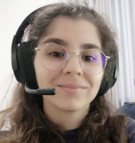

Quem sou eu?
Meu nome é Clara, tenho 26 anos e eu adoro programar! Sou gamer, um dos meus jogos favoritos ainda é The Witcher 3. Adoro uma boa leitura como O Hobbit e aprecio as belas artes dos quadrinhos como em Superman Quatro Estações.
Minha carreira
Sempre sonhei em ser cientista então cursei Ciências Biológicas, licenciatura. Logo começei minha iniciação cientifica onde começei a aprender a programar. Aprendi Matlab e desenvolvi vários projetos úteis para o laboratório. Aprendi usar o Arduino e assim consegui desenvolver diferentes projetos como o painel de led que acendia diversos led de forma pseudo-aleatória usando o raio que eu queria. Também neste mesmo projeto aprendi um pouco de robótica para poder analisar os dados. Mais para frente aprendi a usar sistemas de machine learning como o Deeplab cut.
Querendo avançar na minha carreira científica, iniciei meu mestrado em 2019. Junto com meus orientadores, iniciamos um método inovador de pesquisa usando imagens em bancos de dados online. Coletei dados para mais de 1000 espécies, com auxilio dos meus orientadores, analisei os dados, criei imagens e gráficos com Matlab e R, e obtivemos ótimos resuldados.
Após meu mestrado me senti incentivada a estudar e aprofundar mais ainda na programação, assim ainda em 2021 começei meus estudos de HTML, CSS e Javascript. Logo depois me tornei professora de programação para crianças.
Minhas experiencias
- Professora de Ciências Biologicas pelo Estado julho - dezembro 2021
- Professora de inglês em CRESTEC 2021 - atual
-
Professora de programação em Byju's Future School 2021 - atual
Ensino crianças a criar jogos, aplicativos e sites usando HTML, CSS e Javascript.
Minhas habilidades
- Ingês Fluente
- Espanhol Fluente
- Organizada
- Pontual
- Adoro desafios
- Criativa
- Flexivel
- Trabalho em equipe